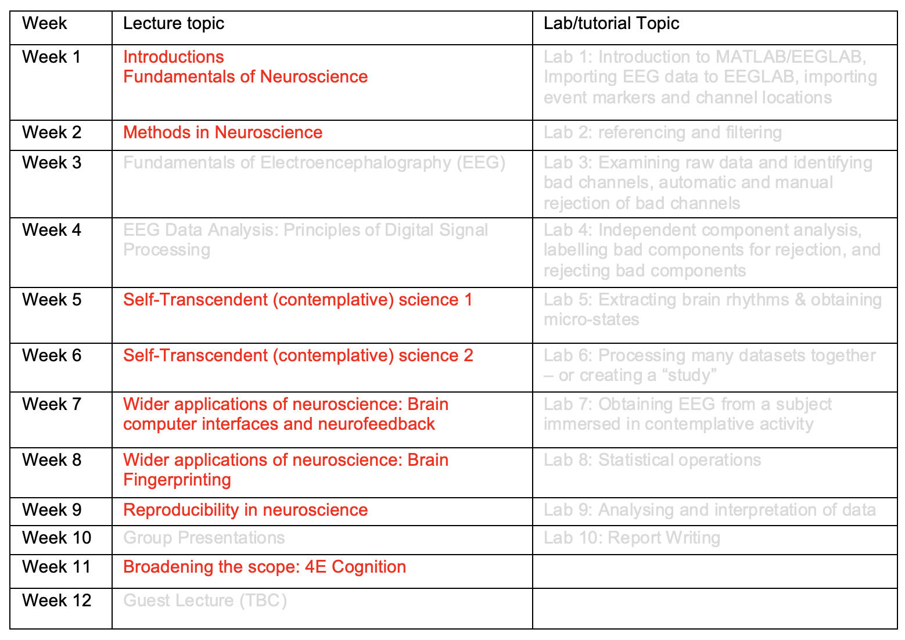
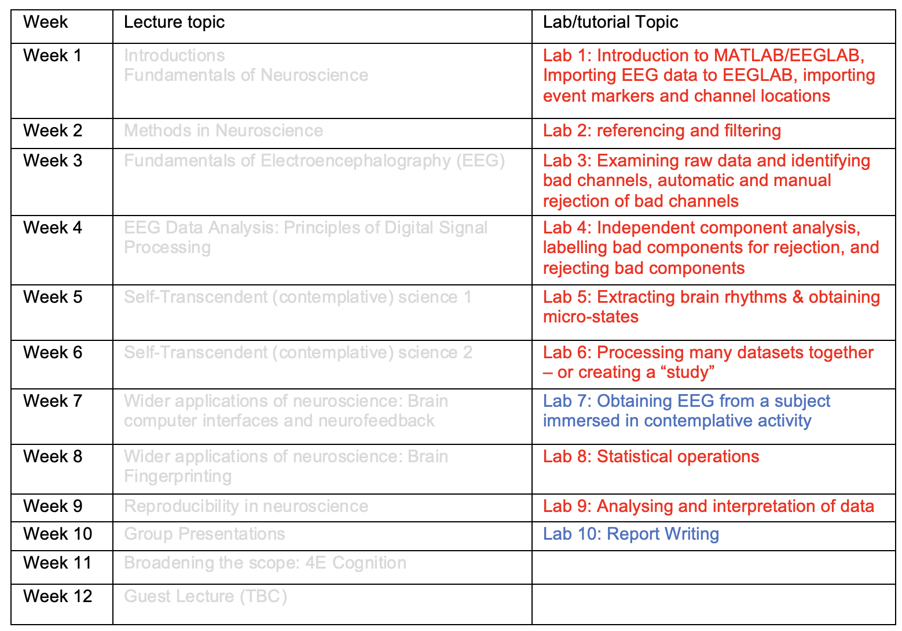
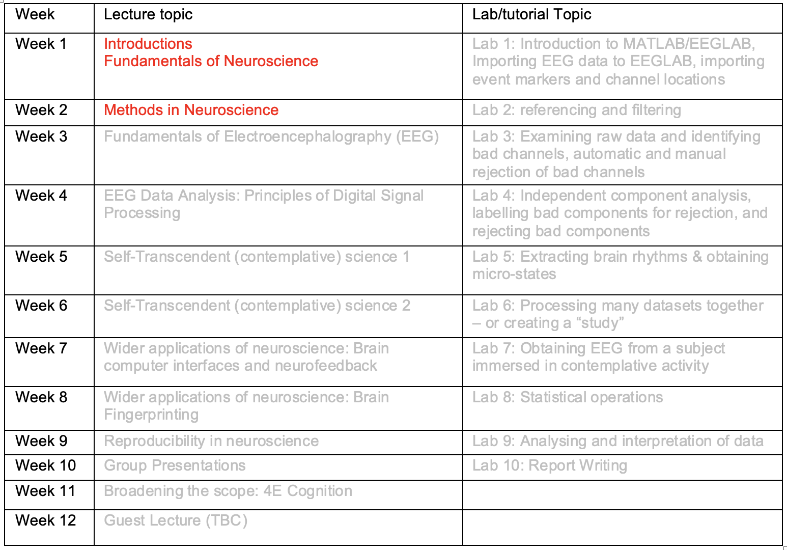
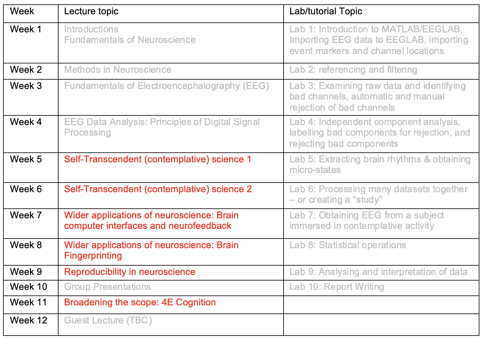
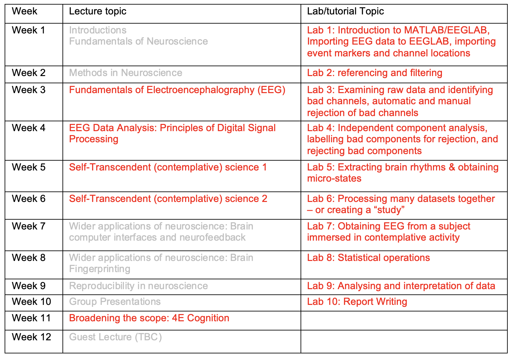

Week 1
PSYC480
Kauhau
- Introductions
- Introduction to the course: Understand the overall scope and intention of PSYC480
- Fundamentals of Neuroscience
Introductions
Class reps
400 Level needs 2 class reps
Link to registration system: https://ucsa.org.nz/support/classrepresentatives/
Course Structure
- Fundamentals, EEG, Self-Transcendent practices, applications, reproducibility, broader scope, guest lecture
- Learning outcomes
- Lecturers
- Textbook/readings
Assessments
| Assessment | Due | % of final mark |
|---|---|---|
| Written labs | Due Fridays | 20% |
| Class participation | During lectures | 10% |
| Lit Review/Essay | 17 Mar | 10% |
| Oral group presentation | Week 10 (15 May) | 20% |
| Lab Report | 2 Jun | 40% |
Class Participation 10%
During 7 out of 8 weeks (excluding weeks 3, 4, , 10, and 12), you will be required to contribute to class discussions. The quality of your contribution will be noted during classes. If you contribute meaningfully to at least 7 discussions, you will get a full 10% class contribution mark.
Class Participation

Written Labs 20%
This course has 10 one-hour labs, in the first 10 weeks. Eight labs deal with processing and analyzing EEG data and you will be required to submit written work by the end of these weeks. Two labs (Lab 7 and Lab 10) do not require any written work. Lab 7 deals with collecting data from each of you, using EEG headset, that you will process and analyze for your Individual Lab Report assignment. Lab 10 teaches you how to write a lab report. Each lab contributes 2% to your final PSYC480 grades (=20% total from labs). Please note that you cannot write the Individual Lab Report unless you have your own EEG data. This being the case, Lab 7 is also important for your 40% Individual Lab Report.
Written Labs

Literature Review/Essay 10%
A 1000 word (3 pages) literature review/essay covering fundamentals of and methods in neuroscience. This exercise will help you dig deeper into the world of neuroscience and having a think about what processes and methods you might use in case you wanted to conduct neuroscientific research. You can select from variety of topics, including but not limited to the history of neuroscience, old methods, contemporary methods, the role of advanced computational modelling, the role of open-science in improving neuroscientific research, the role of online repository and version control tools such as Git and GitHub, etc.
Literature Review/Essay

Oral Group Presentation 20%
- Present on a topic of your choice relevant to neuroscience as part of a group - from Week 5-9 or Week 11.
- Each member will get their own grade
- Use Google Scholar, PsycInfo, UC Library and other relevant databases to update and extend your readings.
Oral Group Presentation

Oral Group Presentation …
- Plan ahead and set clear goals and objectives.
- Divide the work and assign roles and responsibilities.
- Conduct thorough research and organize information logically.
- Create a visually appealing and engaging presentation.
- Rehearse several times, individually and as a group.
- Anticipate questions and challenges and prepare appropriate responses.
- Keep track of time and adhere to the allotted time.
Oral Group Presentation …
- Deliver the presentation with confidence and enthusiasm.
- End with a strong conclusion and thank the audience.
- Reflect on the performance and use feedback to improve future presentations.
Individual Lab Report 40%
- APA-styled scientific report
- Intro: the neuroscience of self-transcendent practices
- Method: Method of your own EEG data collected in Week 7.
- Results: Analysis of your EEG data shall be reported.
- Discussion: Analytic report of the patterns in your EEG data compared with available literature, its theoretical implications etc.
Individual Lab Report

Week 7 Data Collection
We might not be able to collect data from all of you within the one hour of weekly lab. Volunteering for data collection during the week or even during the term break are encouraged and appreciated.
Final Exam
Late Work
- Not accepted for Written Labs, Class Participation, or Oral Presentation
- 10% penalty per each 24-hour delay for large assignments
- What if you have genuine reasons stopping you from submitting on-time?
How to seek help?
- Use forum extensively
- Attend weekly hui
- Issues: Check Learn or Course Outline. Not solved? Ask Usman
- If you email me or make a forum post, give me up to 24 hours to respond
Mean of Communication
- Forum
- Ask directly
Please use your UC email address and my staff email address usman.afzali@canterbury.ac.nz
BREAK TIME
Fundamentals of Neuroscience
Discussion